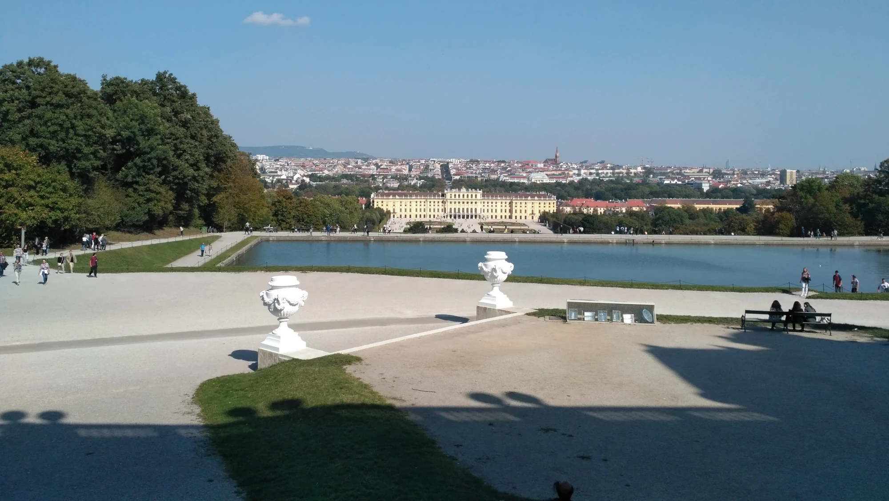
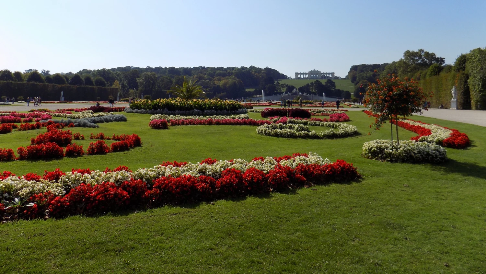
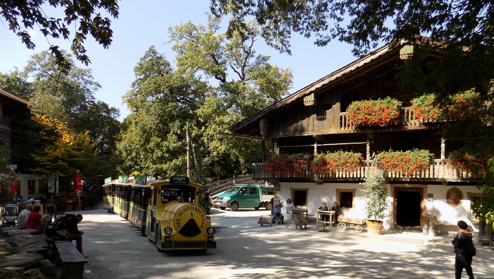
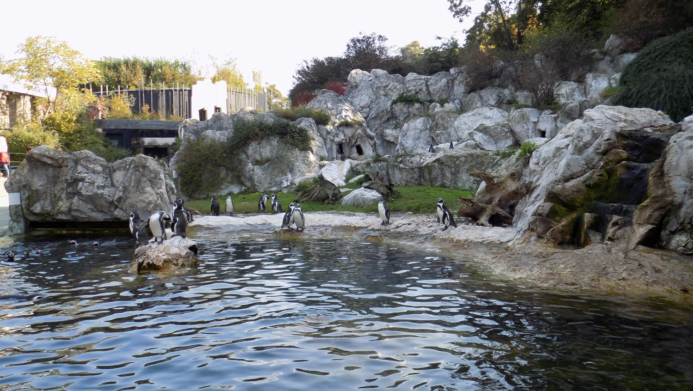
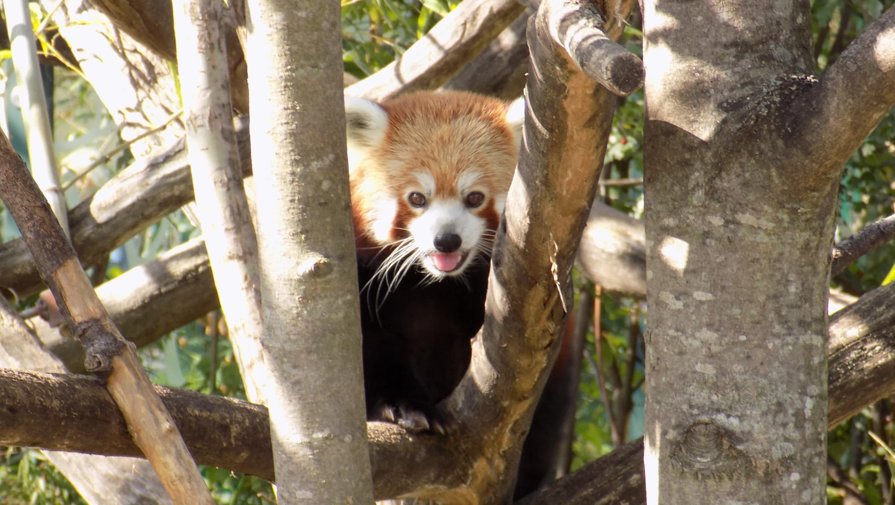
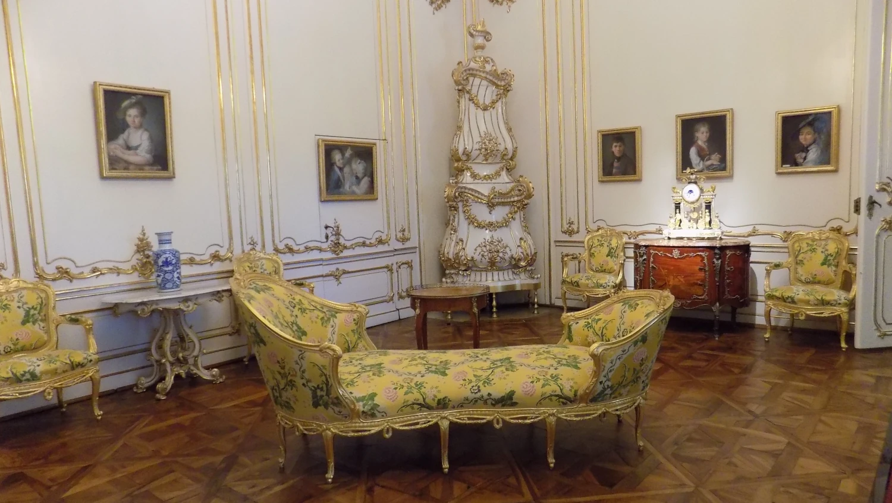
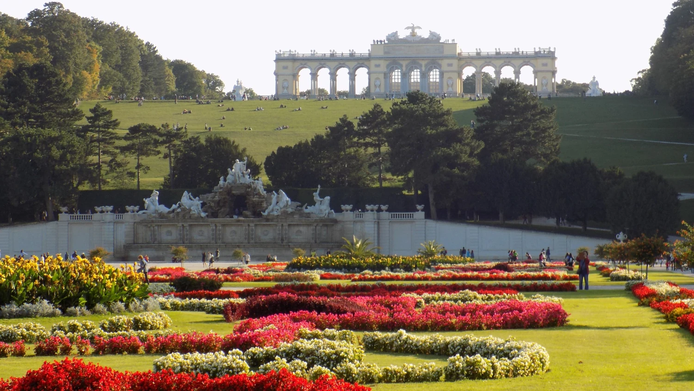

Vídeň – elegantní srdce Evropy
Vídeň

Vyrazily jsme na jednodenní výlet s CK České Kormidlo do vídeňské Zoo Tiergarten Schönbrunn, která je nejstarší zoologickou zahradou na světě, a zároveň jsme navštívily i zámek Schönbrunn.
Jednou jsem tu byla také na vánočních trzích, ale tehdy celý den propršel, takže jsem si z návštěvy moc neodnesla – snad to vyjde lépe někdy příště.
Musím uznat, že samotná zoo je opravdu krásná a celý areál Schönbrunnu působí velmi příjemně. Co se týče interiéru zámku, nic honosnějšího jsem snad ještě neviděla.
Do budoucna bych tu ještě ráda navštívila i místní podmořský svět.
Město císařů, kávy a hudby
Vídeň je hlavní a největší město Rakouska ležící na řece Dunaj. Má přibližně 2 miliony obyvatel, což z ní činí jednu z největších metropolí ve střední Evropě. Její historie sahá až do doby římské, kdy zde stál vojenský tábor Vindobona. Největší rozkvět zažila jako hlavní město Habsburské monarchie, kdy se stala jedním z nejmocnějších a nejbohatších měst Evropy. Dodnes je plná honosných paláců, kostelů a bulvárů, které tuto éru připomínají. Vídeň je také světovým centrem klasické hudby – působili zde Mozart, Beethoven či Strauss. Dnes spojuje bohatou historii s moderním městským životem, kvalitní infrastrukturou a vysokou životní úrovní.
Při návštěvě Vídně bys neměl vynechat katedrálu Stephansdom, císařský palác Schönbrunn a historický komplex Hofburg, které připomínají slavnou habsburskou minulost města. Za zábavou a krásnými výhledy se vydej do Prateru k obřímu kolu Riesenrad, milovníky umění nadchne barokní palác Belvedere. Atmosféru každodenní Vídně pak nejlépe poznáš na trhu Naschmarkt a v tradičních vídeňských kavárnách, jako jsou Central, Sacher nebo Demel.
🛡️ Bezpečnost
Vídeň patří dlouhodobě mezi nejbezpečnější velká města světa. Kriminalita je nízká, násilné činy jsou vzácné. Turisté se ale mají mít na pozoru před kapsáři hlavně v metru a kolem Stephansdomu.
🎓 Školství
Rakousko má kvalitní vzdělávací systém. Vídeň je univerzitní město – studuje zde přes 200 000 studentů. Univerzita ve Vídni patří k nejstarším v Evropě.
💼 Ekonomika a zaměstnanost
Vídeň je ekonomickým centrem Rakouska. Nejvíce pracovních míst je v službách, IT, turismu, bankovnictví, mezinárodních organizacích (OSN, OPEC)
Nezaměstnanost je nižší než v mnoha evropských metropolích.
👵 Důchody
Rakouské důchody patří k nejvyšším v Evropě. Senioři mají slušnou životní úroveň a slevy na dopravu, kulturu i zdravotní péči.
🏡 Bydlení
Vídeň je světovým unikátem v městském bydlení. Více než 60 % lidí bydlí v obecních nebo dotovaných bytech, nájemné je regulované a díky tomu nejsou ceny tak extrémní jako v Praze nebo Mnichově.
🏥 Zdravotnictví
Rakouské zdravotnictví je špičkové a povinné. Nemocnice jsou moderní a péče kvalitní. Turistům stačí EHIC karta.
🌱 Ekologie
Vídeň je extrémně zelené město. 50 % plochy tvoří parky, lesy, vinice. Třídění odpadu je běžné a pitná voda z Alp teče přímo z kohoutku.
💡 Typy před návštěvou země
Kup si 24–72h jízdenku
Vezmi pohodlné boty
V kavárnách se nespěchá – sedí se dlouho
Neděle = většina obchodů zavřená
Hotovost se hodí i dnes
Galerie





